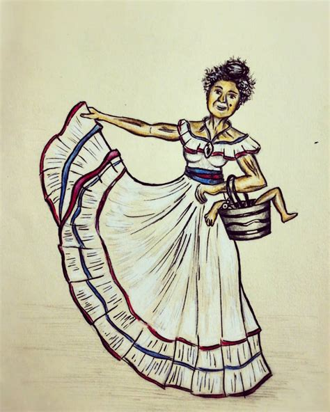

The legend of the Bruja / Witch in the Dominican Republic originates in Europe with a little African flavor thrown in for good measure. This legend conserves the echoes of the medieval beliefs as an older person dies they become a bird. Our witches are old deformed women, perverse and night dwellers. They do fly on brooms but they prefer changing into large birds. In this form they can fly closer to houses and yell with loud squawking sounds. It is said that the witch removes its skin before flying and keeps it in soaking in a tintature. When they take to flight they are said to say “Without God nor Santa Maria!”. People say they have heard the Bruja during flight laughing and singing in a hideous voice.  When the witches rest they do so under the branches of the platano tree. The witches will suck the blood of the children either from the navel or the big toe. It is said that a Bruja will not attack the children of its own friends or if they are twins. The only way one can catch a Bruja is to knock her down. The “tumbadores” are said to be the only ones that are able to fall a witch because only they know the special orations and rituals. After a witch is caught one must wait for dawn. Only when the sun rises and the witches enchantment is broken can their true identity be discovered